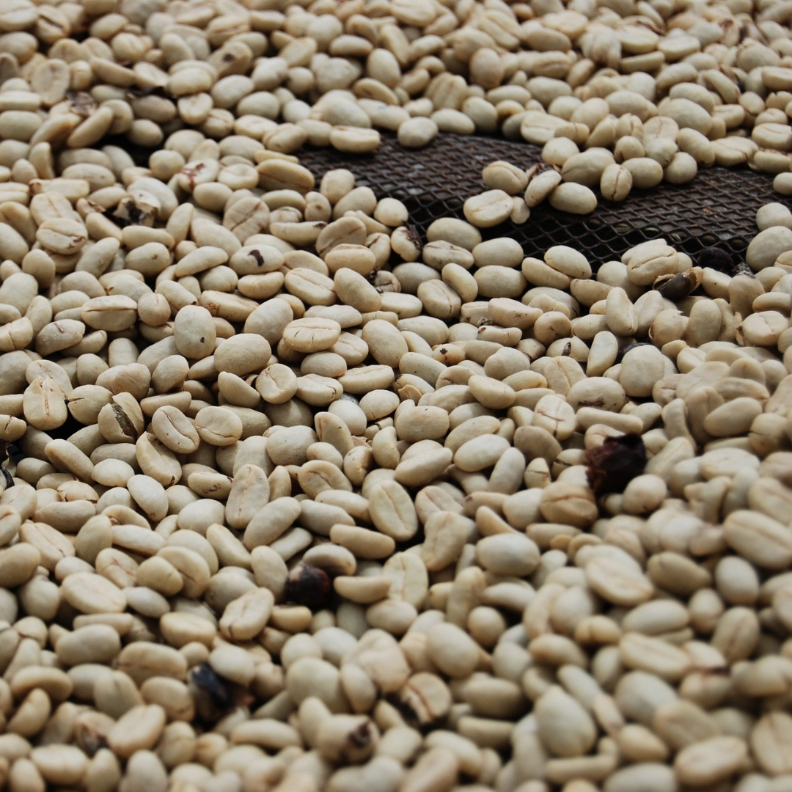

Tiene un poco mas de mil años. Se cree que las plantas y semillas del café
son originarias de Abisinia, hoy República de Etiopía. Las tribús nomadas empezaron
a moles las frutas del cafeto para obtener sus semillas, ya que el café era un
alimento masticable.
Sin embargo, también se han encontrado referencias anteriores correspondientes al
Medio Oriente, Arabia Saudita y Yemen.
La leyenda del Kaldi, cuenta que un dia nota un comportamiento energético y
errático en sus cabras despues de comer unas frutos verdes de una planta. Kaldi
lleva estos frutos a un monasterio, donde monjes intentan hacer una bebida con ellos
pero resulta amarga y tiran al fuego. Al quemarse, el fruto empieza a largar un delicioso olor.
Los monjes intentan hacer la bebida de nuevo pero con los granos tostados, su resultado, el
nacimiento del cafe como bebida. Asi, los Arábes son los primeros en descubrir las cualidades
del grano e inventar sus primeros metodos de extracción.
Se conoce como café a la semilla que se encuentra en el fruto de un cafeto.
Existen alrededor de 80 especies de cafetos en estado silvestro, pero solo
se conocen 10 especies civilizadas. De las mas importantes son la Coffea Arabica y
Coffea Robusta.
GRANOS DE CAFÉ:
Su recoleccion puede ser manual o mecánica.
La seleccion manual: se recolectan solo frutos maduros, esto incrementa
la calidad del café producido, pero necesita mucha mano de obra y es lento.
La seleccion mecánica: levanta todo. El despalillado consiste en raspar las ramas
del cafeto, tiene como resultado cafés acidos por la presencia de frutos verdes.
La perdida de calidad se compensa por la agilidad del proceso, pero esto puede
causarle daños al cafeto.

Tostado: es un proceso mediante el cual el grano verde es sometido a una
fuente de energía y de ello surgen un conjunto de reacciones químicas.
Es el proceso de mayor importancia, ya que en un tiempo aproximado de
15 minutos el grano adquiere todas las cualidades aromaticas y gustosas
que lo hacen especial.
Existen 4 niveles de tostion: Suave/Canela, Media/Americano, Completa/Italiano,
Doble/Oscuro.
Mientras más tostado el grano, más amargo la bebida. Y mientras menos tostado
entre ácido y dulce la bebida.